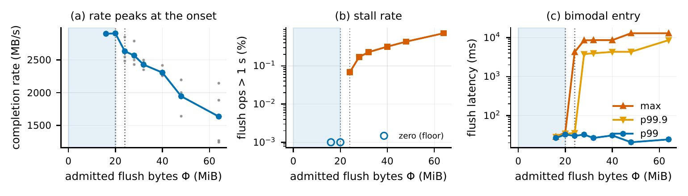

A Sharp but Configuration-Dependent Loss-Recovery Onset in Closed-Loop RDMA Storage Fabrics
*College of Information Science & Technology, University of Nebraska Omaha
†Department of Computer Science, University of Massachusetts Boston
‡Mathematics and Computer Science Department, Assumption University
Submitted to ICNC 2027In short: on a lossy RoCEv2 fabric, NVMe-oF storage clients do not degrade gradually as load rises. One 4 MiB step in admitted bytes leaves the 99th-percentile write latency near 30 ms but moves the maximum from 36 ms to 4.25 s. Where that cliff sits depends on how the work is grouped, so a safe bound measured in one configuration does not transfer to another.
Abstract
On a lossy 25 GbE NVMe-oF testbed, closed-loop storage clients do not degrade gracefully—they collapse. One 4 MiB step in admitted flush bytes leaves the 99th-percentile write latency unchanged near 30 ms while moving the maximum from 36 ms to 4.25 s, and at ≈ 20 ms sampling the subcritical point moves no counter at all. Admitted bytes alone do not separate the outcomes. With the per-initiator policy held identical, 27 MiB is clean at 2:1 fan-in and shows transport loss at 3:1; and with admitted bytes, inferred constituent-command count and command size all fixed, regrouping the budget into more and smaller application writes breaks a fabric that was otherwise quiet. What matters is how a fixed budget is grouped across writes and across initiators, so a bound measured in one configuration does not transfer to another. A decentralized floor of one write in flight per initiator—the smallest grant such a policy expresses—still crosses the onset as hosts are added. The onset also cannot be found by an error-only learner without crossing it, since nothing it can read moves below.
The onset

Findings
- The onset is sharp, and its stalls are recovery-timescale. Bulk upper percentiles stay flat across the transition while the maximum jumps 116×. The stalls are multi-second and clustered, consistent with timeout-driven recovery.
- The safe envelope is not a single aggregate. Regrouping the same admitted bytes into more and smaller application writes, or spreading the same per-initiator policy over more initiators, changes the outcome. A bound measured in one configuration does not transfer.
- A decentralized admission floor cannot hold the envelope as hosts are added. One write in flight per initiator is the smallest grant such a policy can express, and it still crosses the onset once enough hosts join.
Reproduce the tables
Every table in the paper is regenerated by one script from the raw per-operation logs.
git clone https://github.com/UNO-Networks-Lab/rdma-storage-onset
cd rdma-storage-onset
# download both archives from doi:10.5281/zenodo.22838016, then:
mkdir -p data
tar -xzf dsscc-icnc-data.tar.gz -C data
tar -xzf dsscc-icnc-data-msrand.tar.gz -C data
(cd data && sha256sum -c --quiet SHA256SUMS && sha256sum -c --quiet SHA256SUMS-ms-rand) && echo verified
pip install matplotlib
PAPER_DIR=out python3 plot_boundary.pyThe measurements used CloudLab c6525-25g nodes (ConnectX-5, 25 GbE) with all
nodes on one switch. The repository's README explains how to rerun the experiments.
Cite the data
@dataset{wang_2026_22838016,
author = {Wang, Haoyu and Tran, Bang and Jiang, Peng and Zhang, Xiaoqian},
title = {Raw measurement logs for "A Sharp but Configuration-Dependent
Loss-Recovery Onset in Closed-Loop RDMA Storage Fabrics"},
year = {2026},
publisher = {Zenodo},
doi = {10.5281/zenodo.22838016},
url = {https://doi.org/10.5281/zenodo.22838016}
}